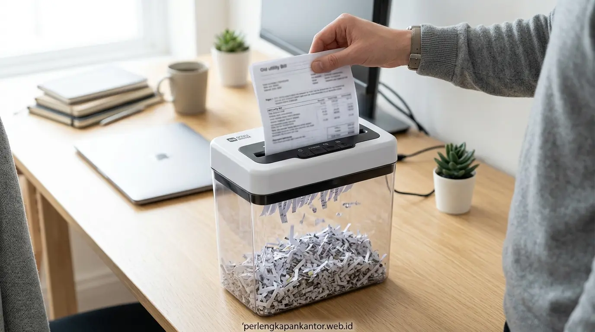
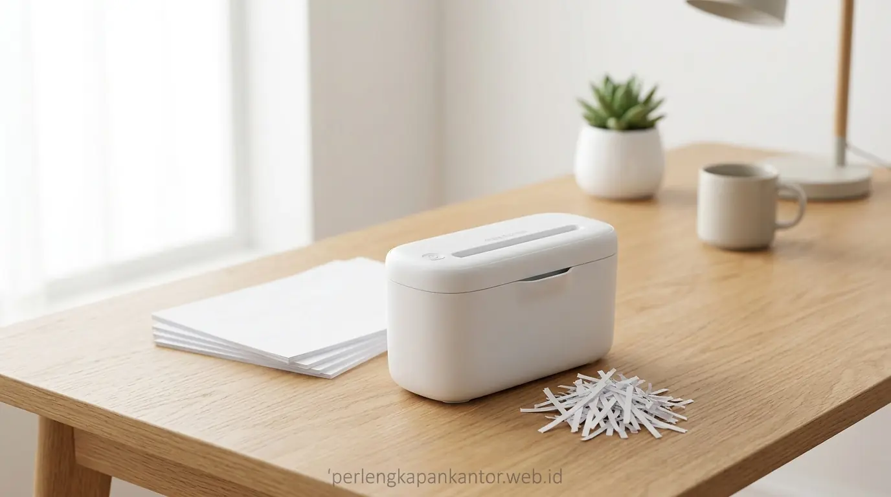

Ulasan Mesin Penghancur Kertas Portabel Murah di Bawah 1 Juta Rupiah
Pilihan mesin penghancur kertas murah portabel di bawah 1 juta rupiah menawarkan perlindungan data rahasia handal dengan pisau cross-cut presisi, sensor otomatis, dan hemat konsumsi listrik.


Mesin penghancur kertas portabel ringkas sangat ideal ditempatkan di atas meja kerja pribadi maupun sudut ruangan administrasi kantor.
- Efisiensi Anggaran: Mesin paper shredder portable murah berkisar antara Rp 450.000 hingga Rp 950.000 dengan fitur proteksi esensial.
- Standar Keamanan Cross-Cut: Memotong kertas menjadi potongan partikel kecil (DIN P-3 / P-4), mencegah rekonsiliasi dokumen finansial dan data pribadi karyawan.
- Fitur Cerdas Otomatis: Dilengkapi sensor auto start-stop, tombol reverse anti-macet, serta thermal shut-off pencegah overheating motor.
- Dukungan Purna Jual: PerlengkapanKantor memberikan garansi 1 tahun dan layanan penyediaan botol shredder oil nabati asli.
- Mengapa Bisnis Skala Kecil & Home Office Membutuhkan Mesin Penghancur Kertas Murah?
- Apa Saja Fitur Teknis Utama yang Wajib Diperhatikan pada Shredder Portabel?
- Bagaimana Perbandingan Antara Tipe Pemotongan Strip-Cut vs Cross-Cut?
- Tabel Komparasi: Paper Shredder Portabel Murah vs Shredder Heavy-Duty Korporat
- Bagaimana Cara Merawat Shredder Portabel Agar Motor Awet dan Pisau Tidak Tumpul?
- Mengapa Pengadaan Office Technology di PerlengkapanKantor Memberikan Kepastian Bisnis?
- FAQ: Pertanyaan Seputar Pembelian Mesin Shredder & Pengadaan B2B
- Kesimpulan Praktis
Mengapa Bisnis Skala Kecil & Home Office Membutuhkan Mesin Penghancur Kertas Murah?
Kebutuhan mesin penghancur kertas murah didorong oleh kepatuhan UU Pelindungan Data Pribadi (UU PDP) serta pencegahan kebocoran informasi finansial dari limbah kertas harian.
Banyak pelaku usaha rintisan (startup), kantor notaris cabang, kantor akuntan publik, hingga profesional yang bekerja dari rumah (WFH) menganggap mesin pemusnah kertas adalah perangkat mahal khusus gedung perkantoran multinasional. Kenyataannya, limbah kertas harian seperti salinan KTP, invoice tagihan, mutasi bank, slip gaji karyawan, dan draft kontrak rahasia justru paling sering bocor dari tempat sampah umum.
Berdasarkan survei Asosiasi Industri Peralatan Kantor Indonesia (AIPKI, 2024), lebih dari 42% kasus kebocoran data rahasia UKM berakar dari dokumen fisik yang dibuang tanpa dihancurkan. Selain itu, riset kepatuhan regulasi Data Privacy Watch (2025) menegaskan bahwa perusahaan dari segala skala usaha terancam denda pidana dan perdata jika terbukti lalai mengelola limbah arsip identitas konsumen.
Memiliki unit penghancur kertas kecil berkapasitas 5–8 lembar per insert di meja kerja Anda adalah langkah pengamanan paling hemat, praktis, dan sesuai standar kepatuhan operasional.
Apa Saja Fitur Teknis Utama yang Wajib Diperhatikan pada Shredder Portabel?
Fitur teknis utama mencakup kapasitas potong lembar (sheet capacity), sensor inframerah auto start/stop, fungsi reverse pembalik kertas, dan proteksi kelebihan panas motor.
Membeli mesin penghancur kertas murah di bawah Rp 1 juta bukan berarti Anda harus mengorbankan fungsionalitas dan keamanan. Berikut adalah spesifikasi teknis penting yang wajib diperiksa sebelum membeli:
Mampu menelan 5 hingga 8 lembar kertas HVS 70-80 gsm sekaligus tanpa membuat putaran motor tersendat.
Pisau baja otomatis berputar saat mendeteksi ujung kertas masuk dan berhenti otomatis saat proses pemotongan selesai.
Tombol pembalik arah putaran pisau untuk memuntahkan kertas secara instan bila terjadi kelebihan muatan (paper jam).
Sirkuit otomatis yang memutus arus listrik bila motor mencapai ambang batas panas, mencegah kumparan mesin terbakar.
Bagaimana Perbandingan Antara Tipe Pemotongan Strip-Cut vs Cross-Cut?
Tipe pemotongan cross-cut menghasilkan konfeti partikel kecil yang mustahil disusun ulang, memberikan tingkat keamanan jauh lebih tinggi daripada strip-cut pita lurus.
Di pasaran mesin penghancur kertas murah, Anda akan menemukan dua jenis mekanisme pisau utama:
- Strip-Cut (Level Keamanan DIN P-1 / P-2): Memotong kertas menjadi untaian pita panjang selebar 6 mm. Satu lembar A4 terpotong menjadi sekitar 30–40 strip. Jenis ini cocok untuk dokumen non-krusial, namun masih berisiko direkonstruksi oleh pihak tak bertanggung jawab.
- Cross-Cut / Confetti-Cut (Level Keamanan DIN P-3 / P-4): Memotong secara vertikal sekaligus horizontal menghasilkan ratusan serpihan partikel (ukuran 4x38 mm). Satu lembar A4 berubah menjadi lebih dari 400 serpihan yang tidak dapat dirangkai kembali.
Model shredder portabel yang direkomendasikan oleh PerlengkapanKantor di rentang harga di bawah 1 juta rupiah mayoritas sudah mengadopsi pisau Cross-Cut presisi, menjamin proteksi data perbankan dan transaksi bisnis Anda setara standar korporat.

Blok pisau pemotong baja karbon padat menjamin pemotongan cross-cut halus tanpa menyisakan teks informasi penting.
Tabel Komparasi: Paper Shredder Portabel Murah vs Shredder Heavy-Duty Korporat
Komparasi menunjukkan shredder portabel unggul dalam portabilitas dan efisiensi biaya, sementara shredder heavy-duty dirancang untuk volume departemen besar.
Berikut tabel komparasi detail untuk membantu Anda menentukan jenis mesin yang paling pas untuk kebutuhan ruang kerja:
| Spesifikasi / Fitur | Paper Shredder Portabel (< Rp 1 Juta) | Shredder Heavy-Duty Departemen |
|---|---|---|
| Kapasitas Potong Sekali Masuk | 5 – 8 lembar HVS 70 gsm | 15 – 25 lembar HVS 70 gsm |
| Tipe Hasil Potongan | Cross-Cut (DIN P-3 / P-4: 4 x 38 mm) | Micro-Cut (DIN P-5: 2 x 15 mm) |
| Volume Wadah Penampung (Bin) | 10 – 15 Liter (Kompak, mudah dikosongkan) | 30 – 50 Liter dengan roda dorong |
| Konsumsi Daya Listrik | Sangat hemat (120 – 180 Watt) | 300 – 600 Watt |
| Peruntukan Pengguna | Meja individu, Notaris, SOHO, Home Office | Divisi Keuangan, HRD, Ruang Arsip Sentral |
| Estimasi Kisaran Harga | Rp 450.000 – Rp 890.000 | Rp 2.500.000 – Rp 8.000.000+ |
Bagaimana Cara Merawat Shredder Portabel Agar Motor Awet dan Pisau Tidak Tumpul?
Cara merawat shredder portabel meliputi pembersihan wadah berkala pada 80% kapasitas, pelumasan pisau dengan shredder oil nabati, dan mematuhi batas duty cycle mesin.
Meskipun berharga terjangkau, unit mesin penghancur kertas murah dapat bertahan lebih dari 4–5 tahun tanpa macet jika Anda menerapkan tips perawatan rutin berikut:
- Gunakan Shredder Lubricant Oil Khusus: Lumasi selembar kertas dengan beberapa garis minyak pelumas shredder khusus, lalu masukkan ke mesin sebulan sekali. Jangan pernah gunakan minyak goreng atau WD-40 yang dapat merusak gir plastik.
- Hindari Memasukkan Lembaran Lengket: Jangan memotong stiker berperekat, lakban, atau kertas laminating plastik tebal karena residu lem akan menempel pada gerigi pisau.
- Lepaskan Klip Penjepit Kertas: Staples kecil masih aman, tetapi penjepit kertas kawat tebal (binder clip/paper clip besar) wajib dilepas terlebih dahulu.
- Beri Jeda Waktu Istirahat: Setelah pemakaian intensif 3–4 menit, biarkan mesin mendingin selama 10 menit agar dinamo motor tidak overheat.
Mengapa Pengadaan Office Technology di PerlengkapanKantor Memberikan Kepastian Bisnis?
PerlengkapanKantor memberikan garansi penggantian unit baru, ketersediaan suku cadang asli, harga grosir distributor, dan penerbitan faktur pajak resmi lengkap.
Membeli peralatan teknologi kantor melalui marketplace sembarangan sering kali menyulitkan saat klaim garansi atau meminta kelengkapan faktur pajak perusahaan. PerlengkapanKantor melayani pengadaan B2B maupun pembelian ritel korporat dengan standar profesional:
- Produk 100% Original & Lolos QC: Seluruh unit shredder melewati uji fungsi pemotongan sebelum dikirim ke pelanggan.
- Layanan Konsultasi Pemilihan Tipe Mesin: Tim teknis kami siap memandu Anda memilih tipe shredder yang paling selaras dengan volume limbah kertas kantor Anda.
- Pengiriman Cepat & Aman: Layanan same-day delivery untuk wilayah Jakarta dan ekspedisi kargo berasuransi untuk kota-kota lain di Indonesia.
FAQ: Pertanyaan Seputar Pembelian Mesin Shredder & Pengadaan B2B
Simak jawaban atas pertanyaan umum terkait mesin penghancur kertas murah dan mekanisme pemesanan berikut:
Kesimpulan Praktis
Melindungi kerahasiaan dokumen bisnis dan data pribadi tidak harus menguras anggaran operasional. Dengan mesin penghancur kertas portabel di bawah 1 juta rupiah, kantor Anda mendapatkan perlindungan data terpercaya dengan efisiensi maksimal.
Penulis: Tim Spesialis Perlengkapan Kantor
Divisi spesialis teknologi perkantoran dan sistem pengarsipan di PerlengkapanKantor. Berdedikasi menyajikan panduan objektif serta solusi pengadaan perangkat kerja modern bergaransi resmi.